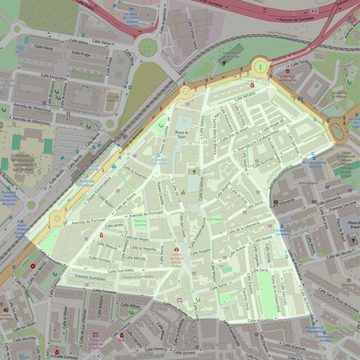

Santa María la Blanca
- Arciprestazgo
- Alcorcón
- Población
- Alcorcón
- Dirección postal
- c/ Iglesia, 7
- Código postal
- 28921
- Extensión
- 0,37 km² (37 ha)
- Teléfono
- 916 195 790
- Información demográfica
- De la parroquia · De la población (Alcorcón) · Del arciprestazgo (Alcorcón)


Descargar mapaLímites según decreto
"Partiendo de la glorieta donde confluyen la Avenida de Leganés con la Avenida de Móstoles, arrancan por el eje de la Avenida de Móstoles (en dirección noreste); siguen por el eje de las vías del ferrocarril Madrid Móstoles (C-5, en dirección suroeste), por una línea recta imaginaria hasta la calle Guindales, por el eje de la calle Guindales (en dirección sureste), por el eje de la calle Cáceres (en dirección suroeste), por el eje de las calles Princesa, Alfares y Matadero (en dirección noreste), por el eje de la calle Polvoranca (en dirección noroeste), por el eje de la Avenida Cantarranas (en dirección noreste) y por el eje de la Avenida de Leganés (en dirección noroeste) hasta la glorieta donde confluyen la Avenida de Leganés con la Avenida de Móstoles, punto de partida". (Decreto de rectificación de límites, 21-6-2005. B.O. de julio-agosto de 2005, pág. 803)